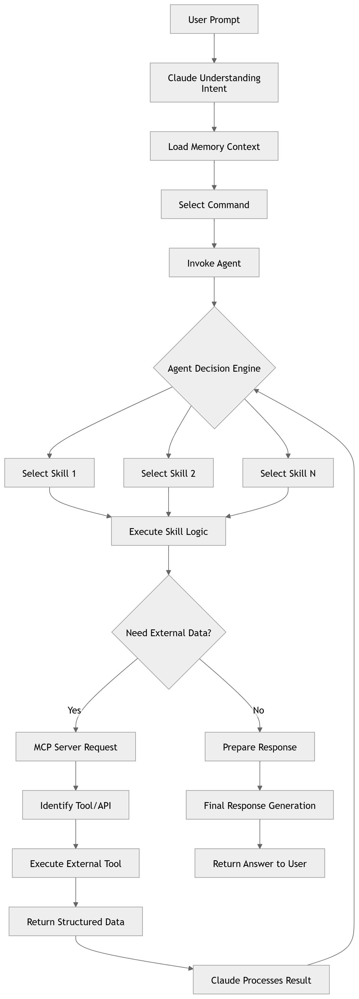

Claude Context Engineering Architecture
How the .claude/ directory is structured to give Claude persistent knowledge, reusable behaviors, and autonomous capabilities.
Every Claude Code project uses the .claude/ folder as its context engineering workspace. Each subfolder has a specific role — together they turn Claude from a blank-slate assistant into a context-aware, skill-equipped, autonomous agent.
~/.claude/ ← Global Claude config (all projects) │ ├── memory/ ← Persistent facts Claude recalls across sessions │ ├── user_profile.md │ ├── feedback_testing.md │ └── MEMORY.md ← Index file loaded into every conversation │ ├── skills/ ← Reusable slash-command modules (the /skill library) │ ├── find-bug.md │ ├── test-design.md │ ├── analyze-rootcause.md │ ├── explain-code.md │ ├── analyze-security.md │ └── analyze-requirement.md │ ├── agents/ ← Specialized sub-agents with defined roles & tools │ ├── qa-agent.md │ └── sdet-agent.md │ ├── commands/ ← Custom slash commands that invoke agents or skills │ ├── qa-agent.md ← Becomes /qa-agent │ └── sdet-agent.md ← Becomes /sdet-agent │ └── settings.json ← Permissions, hooks, env vars, model config .claude.json (project root) ← Project-level MCP server config & overrides
What Each Part Does
memory/
Persistent knowledge that survives across conversations
Markdown files storing facts about the user, project decisions, and preferred behaviors — loaded automatically at session start via MEMORY.md as an index.
Example: "User prefers integration tests over mocks — burned by a failed prod migration."
skills/
Reusable instruction modules invoked as slash commands
Each .md file is a self-contained workflow — a structured prompt that tells Claude exactly how to approach a specific task type when triggered via the Skill tool.
analyze-rootcause · analyze-security · analyze-requirement
Skills are rigid (TDD, debugging) or flexible (pattern-based) — the file itself declares which.
agents/
Specialized sub-agents with defined roles, tools, and delegation rules
Agent definition files describe the agent's persona, which skills it applies, which tools it has access to, and when to delegate to a sibling agent — enabling orchestration patterns.
sdet-agent — code flow, root cause, security
Agents can spawn other agents in parallel or sequentially for complex pipelines.
commands/
Custom slash commands that surface agents and skills from the chat bar
Each file in commands/ becomes a /command-name shortcut. Typing /qa-agent expands into the full prompt defined in commands/qa-agent.md, routing to the correct agent automatically.
/sdet-agent → commands/sdet-agent.md
Commands are the user-facing entry point — skills and agents are the backend logic.
~/.claude.json (project root)
Project-level config file that registers MCP servers, sets model overrides, and stores project-specific permissions — separate from the global settings.json.
How It All Flows Together
When you type a prompt or a slash command, Claude orchestrates all these layers in sequence:
User Prompt
You type a message or /command
Load Memory
MEMORY.md index injected into context
Select Command
Slash command expands from commands/
Invoke Agent
Agent definition loaded from agents/
Execute Skills
Agent applies skill logic from skills/
Agent Decision Flow
This diagram shows the full decision engine — from user prompt through agent selection, skill execution, and whether external data (MCP) is needed before returning a response.

The Agent Decision Engine selects one or more skills, then determines whether to call an MCP server for live data before preparing the final response.
Quick Reference
| Path | Scope | What lives here | When it loads |
|---|---|---|---|
~/.claude/memory/ |
Global | User facts, feedback, project context | Every session start |
~/.claude/skills/ |
Global | Reusable task-specific instruction modules | On demand via Skill tool |
~/.claude/agents/ |
Global | Sub-agent role definitions & delegation rules | When agent is invoked |
~/.claude/commands/ |
Global | Custom slash command definitions | When /command is typed |
.claude.json |
Project | MCP server config, model & permission overrides | On project open |
~/.claude/settings.json |
Global | Hooks, allowed tools, env vars, model config | On Claude Code start |